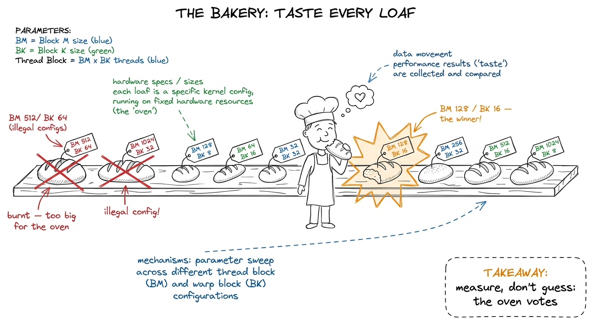
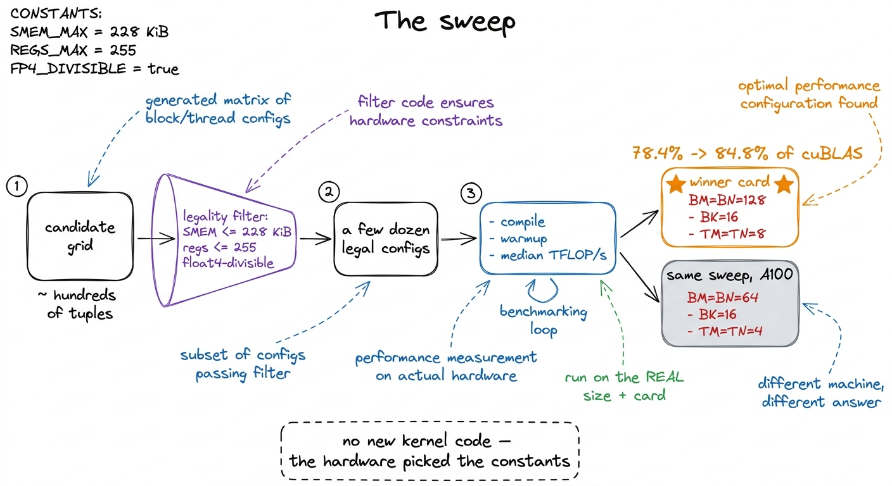
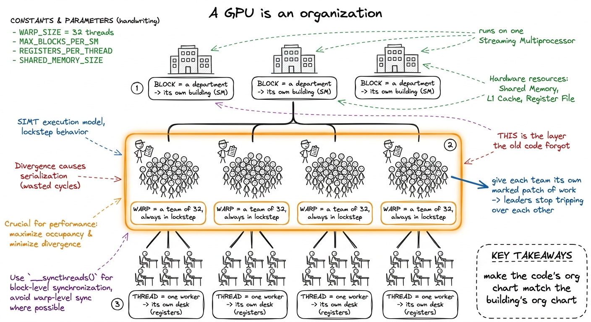
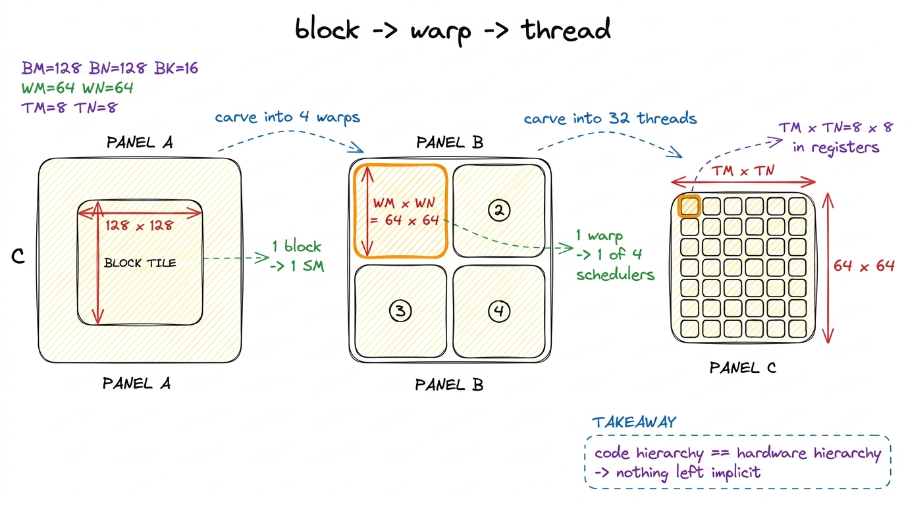
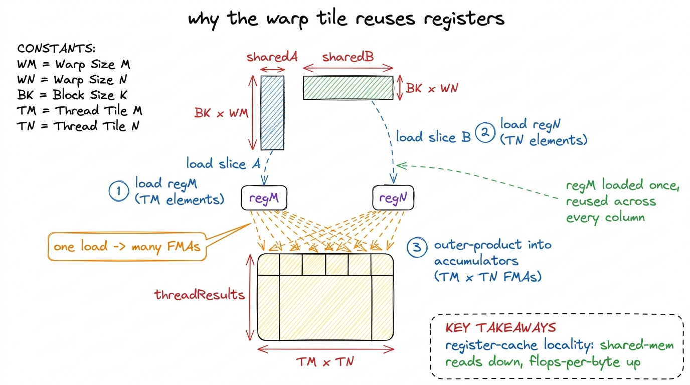
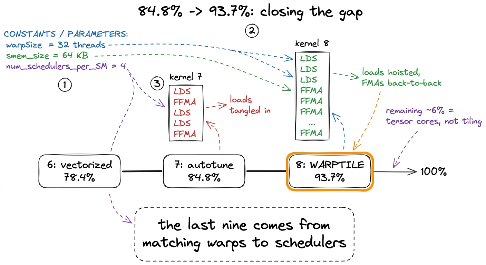

Teaching Kernels 7–8: the org chart
By the end of this chapter you can stand at the whiteboard and teach the last two rungs of the GEMM ladder — autotuning and warptiling — and land the finale: how a kernel your students wrote by hand climbs to 94% of cuBLAS, close enough to touch NVIDIA's own fifteen-year-old library. You start knowing nothing about warp schedulers. You leave able to draw the org chart of a GPU, explain why letting the machine vote on tile sizes beats human taste, and deliver the emotional payoff of the whole four-week climb.
This is the top of the mountain. Everything before was the climb — coalescing, shared memory, register tiling, vectorizing. Your students have already gone from a humiliating 1.3% of cuBLAS to a genuinely good 78.4%. This chapter is the last two steps, and they are different in character: the wins are small — single digits — and cost the most engineering. But they are the steps that make a student say "wait, I beat 90% of the library NVIDIA sells?" So let's land the finale well.
Where we are, in one breath
Say this to set the scene. "Kernel 6 got us to 78.4% of cuBLAS. Every tile size in it — how big a chunk of the answer each block owns, how many outputs each thread computes — was a number I picked by hand because it looked round. It worked. But 'it worked' is not 'it's the best the machine can do.' The last two kernels stop guessing."
Kernel 7: stop guessing the tile sizes
Here is the plain-words version. A tile size is not one number — it is a set of coupled knobs that fight each other. Make the block tile bigger and you reuse each loaded byte more (good), but you eat more shared memory and registers, so fewer blocks fit on a worker-neighborhood at once (bad). There is a sweet spot in the middle. And here is the humbling truth to teach without shame: nobody can compute where the sweet spot is by thinking. It depends on the mood of the compiler's register allocator and the exact wiring of that GPU. So we stop reasoning and start measuring.

figure rendering · Autotuning as a bakery: bake every legal recipe, time it on the real oNow the tiny by-hand version. There are five knobs. Three — BM, BN, BK — set the block tile: the chunk of the answer one block owns (BM × BN), and how wide a slice of the shared dimension it carries in at a time (BK). Two — TM, TN — set the thread tile: the patch each single thread computes in its own registers. The number of threads is not a free knob — it falls out of the others.
128 × 128 block tile, cut into 8 × 8 patches per thread, needs (128 × 128) / (8 × 8) = 256 threads. Now change one knob — make the patch 4 × 4 instead — and suddenly you need (128 × 128) / (4 × 4) = 1024 threads. You touched one dial and the block size, the register pressure, and the occupancy all moved at once. That's why you can't reason about them one at a time.The method is a grid search with a legality filter, and the filter is the whole trick. Most combinations of the five knobs are illegal — they overflow shared memory, blow past the 255-register-per-thread ceiling, or produce a thread count that can't do the wide vectorized loads. So before you ever compile a single one, you run each candidate through a cheap checklist and throw out the ones that can't possibly run.
BM = [64, 128, 256]; BN = [64, 128, 256]; BK = [8, 16, 32, 64]
TM = [4, 8, 16]; TN = [4, 8, 16]
def legal(BM, BN, BK, TM, TN):
nthreads = (BM * BN) // (TM * TN)
if not (64 <= nthreads <= 1024): return False # block-size limits
if (BM * BN) % (TM * TN): return False # tile divides evenly
if (BM * BK) % (4 * nthreads): return False # float4-loadable
if (BK * BN) % (4 * nthreads): return False # float4-loadable
smem = (BM * BK + BK * BN) * 4 # bytes
if smem > 228 * 1024: return False # SMEM ceiling
return TM * TN + 8 <= 255 # register ceilingA grid that starts as a few hundred combinations collapses to a few dozen legal ones — small enough to compile and time exhaustively over lunch. Then the runner is embarrassingly simple: for each survivor, recompile the kernel with those constants, run it a few times on the real matrix size, keep the median speed, and remember the winner.

figure rendering · The sweep in four stages. The only human input is the candidate grid aNow the punchline, and it is a lovely one to deliver. The winning recipe came back almost the same as the hand-picked guess — except the search quietly doubled BK from 8 to 16, deepening each shared-memory step so more math happens per round-trip to the fridge. That one change nobody could have reasoned about lifts the kernel from 78.4% to 84.8% of cuBLAS. Six points, for zero new kernel code.
64 / 64 / 16 / 4 / 4, not the H100's 128 / 128 / 16 / 8 / 8. Say it plainly: "a tile shape is not a property of the algorithm. It's a property of the machine. Different machines have different opinions." That is why cuBLAS, CUTLASS, and Triton all ship a search cached per architecture. Your students just built the smallest honest version of that machinery.Kernel 8: the org chart the code was ignoring
Here is the setup for the finale, and it is the single most important idea in the chapter. Autotuning rearranged the work, but every thread still did its job the same clumsy way. Grid search can pick a better tile shape, but no tile shape can fix how the 32 threads inside a warp step on each other. To go further, we have to stop pretending a GPU has two levels and admit it has three.

figure rendering · The three-level org chart of a GPU. The block-tiled kernel named deparNow the plain-words mechanism. Keep the 128 × 128 block tile. Choose a block of 128 threads — exactly 4 warps, one per team-leader. Cut the block tile into a 2 × 2 grid of four warp tiles, one per warp: 64 × 64 each. Inside a warp tile, the 32 threads each own their little 8 × 8 register patch. Three levels of tiling, three levels of hardware, one-to-one.
64 × 64 warp tile covered by 32 threads each doing 8 × 8: (64 × 64) / (32 × 8 × 8) = 2. That leftover two is not slack — it means each warp lays its stamp down twice, striding across its tile instead of covering it in one solid block. That striding (the WNITER/WMITER knobs) spreads each thread's reads across more memory banks and keeps its register footprint small enough to fit. The factor of two is the new dial the autotuner turns.
figure rendering · Block, warp, and thread tiles nested inside one another. Each loop levThe math does not change — same block tile, same wide loads into shared memory, same accumulation. What changes is the indexing. Every thread now works out which team it's on (threadIdx / 32, the warp ID) and which seat it holds within that team (threadIdx % 32, the lane), and lays its outputs down densely inside its own team's patch instead of wherever a flat index happened to scatter them.
And the payoff has a name: register reuse. Inside the innermost loop, each thread loads a small fragment of A and a fragment of B from shared memory into its registers, then multiplies them into its accumulators. Because each warp's work is now a tidy, predictable patch, the loads get hoisted — done once at the top of each step — and then reused across a whole burst of multiply-adds with no memory touched at all. One load feeds many flops. The register file becomes the innermost cache.

figure rendering · The inner loop loads each operand fragment into registers once and reumma, Hopper's warpgroup-wide wgmma, which eats a fragment straight out of shared memory) operate at warp granularity. So this three-level skeleton is precisely what runs inside cuBLAS, CUTLASS, and the FlashAttention kernels serving Llama and DeepSeek on H100 and B200 clusters today. Drawing this org chart is drawing the load-bearing structure of every production GEMM on Earth.The evidence, and the honest cost
There is a demo here that lands hard. Point the profiler (Nsight Compute) at kernel 7 and kernel 8 back to back and read the assembly out loud.
LDS), a couple of multiply-adds (FFMA), another load, more FMAs — tangled together, because the compiler couldn't prove which loads were reusable. Kernel 8's inner loop is clean: a burst of loads at the top, then a long uninterrupted run of FFMA FFMA FFMA... reading only registers. Same math. The loads got hoisted out and the multiply-adds run back-to-back. Say: "that visual — tangled versus clean — is the speedup, spelled out in the machine's own handwriting. More flops per byte you fetched from the fridge."
figure rendering · The final rung, and the SASS difference that buys it. Kernel 7 interleBe honest about the cost. Explicit warp tiling adds registers — each thread now holds more fragments and a fatter accumulator array. Past 255 registers per thread the compiler spills to slow memory, and register pressure (not shared memory this time) caps how many warps stay resident. So the autotuner's job here is a balance: more sub-tiles means more reuse but more registers; fewer means more resident warps but less reuse. That trade is exactly why the new WNITER knob matters.
Autotune the whole set of knobs on the warptiled kernel and it lands at 93.7% of cuBLAS — call it 94%. That's the number. From 84.8% to 93.7% is not a dramatic multiple; it is the last hard nine you buy by making the scheduler's job trivial instead of merely possible.
1 Why stop at 94% and not chase the last 6%? Because every kernel on this ladder does its multiply-adds on the ordinary FP32 pipes (the "CUDA cores"). cuBLAS, on a real workload, issues to the tensor cores — a different instruction that does a whole tiny matmul at once and delivers roughly an order of magnitude more throughput. The last stretch isn't about tiling at all; it's about swapping the instruction. That's the next section of the course, and this warptiling skeleton is exactly the scaffolding it needs. Don't apologize for the 6% — frame it as the doorway to the next room.
The finale: how to land it
This is the top of the ladder, so the delivery matters.
BK 8 -> 16 as the surprise winner. Checkpoint question: "why can't we just calculate the best tile size on paper?" (right answer: it depends on the compiler and the specific GPU — the machine has to vote). (3) 20 min — kernel 8: the org chart metaphor first, THEN the 2x2 warp-tile carve, then the leftover-factor-of-two counting, then register reuse. Checkpoint question: "what did the old code never name?" (the warp / the team). (4) 10 min — the SASS demo side by side, reveal 93.7%. (5) 5 min — the finale number, below.Common confusions, and the fixes
BK 16, but it could never invent the warp level — a human had to see that search "only rearranges work a single warp still does the same clumsy way." Search picks constants; humans design the structure the search runs over. You need both.You can now teach
- Autotuning as the bakery that tastes every loaf: five coupled knobs, a legality filter that keeps only the recipes that fit, and why the machine must vote on tile sizes because no one can reason them out — plus the punchline that
BK 8 -> 16buys six points for zero new code. - Why the answer is per-GPU: a tile shape is a property of the machine, not the algorithm, which is why real libraries ship a cached search per architecture.
- The three-level org chart — department (block) -> team (warp) -> worker (thread) — and why the block-tiled kernel forgot the middle layer, scattering work across the four warp schedulers.
- Warptiling as giving each of the block's four warps its own dense
64 × 64patch, the leftover factor-of-two sub-tile dial, and the register reuse that hoists loads out of the inner loop. - The SASS demo: kernel 7's tangled loads-and-FMAs versus kernel 8's hoisted-load burst — the speedup in the machine's own handwriting — and the honest register-pressure cost.
- Landing the finale: the
1.3% -> 94%, 70x climb, the flattening curve as the roofline asserting itself, and the frame that the last 6% is a doorway to tensor cores, not a failure.